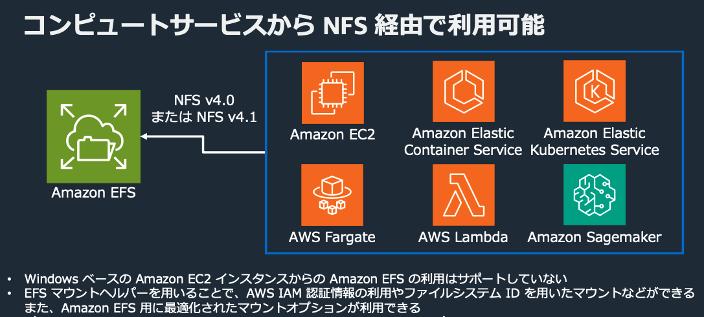
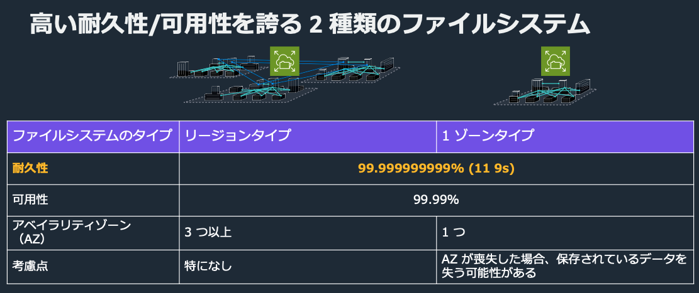
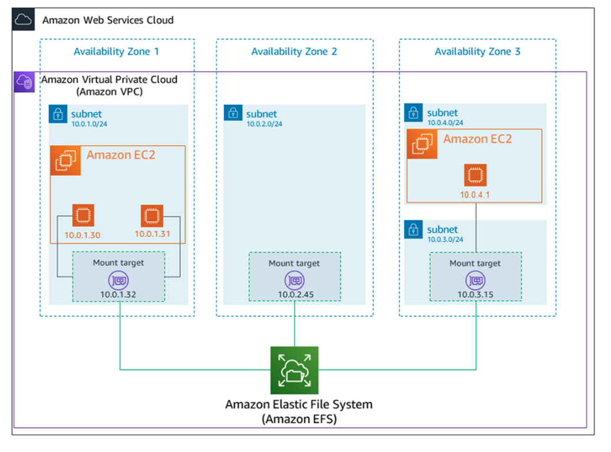
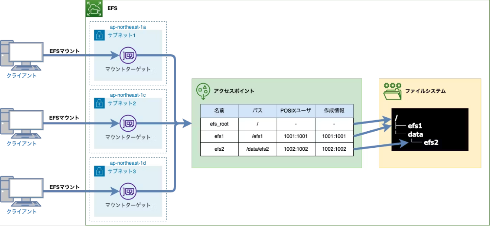

EFS¶
メリット¶
クラウドネイティブなワークロードに適した分散ファイルシステムのフルマネージドサービス。 特徴としては以下
フルマネージド
保存容量に応じた自動拡張
高い耐久性と可能性
セキュリティ
フルマネージド¶
EFSをマウントすると8エクサバイトの容量がマウントされるが、課金は使用容量による重量課金
利用しやすさ¶
さまざまなコンピューティングサービスから利用が可能。
 BlackBelt
耐久性¶
リージョンタイプと1ゾーンタイプが利用可能で、耐久性や可用性はどちらでも非常に高い。 リージョンタイプは3つのAZに分散される。1AZはデータの損失の可能性がある点に注意。
 BlackBelt
セキュリティ¶
EFS自体への操作を制御したり、監視することができる。 また、アプリケーションがEFSに操作する場合も、アイデンティティベース・リソースベース・ネットワークベースでの制御が可能となる。 EFSに保管されるファイルへの暗号化も適用が簡単にできる。
接続方法¶
マウントとは¶
マウントとは、サーバーやコンテナ側の特定のディレクトリとファイルシステムを接続し、ディレクトリ経由でファイルシステムにアクセスできるようにする仕組みのこと。 OSは、ディレクトリ（マウントポイント）を経由してファイルサーバーを認識する。
EFSの接続の概要¶
EFSをマウントするためには、EFSだけでなく以下のリソースについても設定が必要
マウントターゲット(必須)
EFSに接続するためのAZごとの接続先のようなものアクセスポイント(推奨)
EFS側のディレクトリを指定して、マウントさせる。またPOSXIのユーザー管理設定も可能
マウントターゲット¶
EFSファイルシステムにアクセスするためのエンドポイントはマウントターゲットと呼ばれる。 マウントターゲットはAZごとに作成され、各種コンピューティングサービスはこのマウントターゲット経由でEFSに接続するため、VPC-Endpointのような動きをする。
 マウントターゲットの管理
CFNでは、リソースとしてAWS::EFS::MountTargetを個別に定義する必要がある。
MyEFSMountTargetA:
Type: AWS::EFS::MountTarget
Properties:
FileSystemId: !Ref MyEFS
SubnetId: <Subnet-A-ID>
SecurityGroups:
- !Ref EFSSecurityGroup
MyEFSMountTargetB:
Type: AWS::EFS::MountTarget
Properties:
FileSystemId: !Ref MyEFS
SubnetId: <Subnet-B-ID>
SecurityGroups:
- !Ref EFSSecurityGroup
アクセスポイント¶
マウントする際にEFSのルートディレクトリではなくて、別のディレクトリをルートディレクトリとして設定することができる機能。また、権限についてもアクセスポイントで制御することができる。 この機能を利用するためにはEFSのマウントヘルパーが必要な点に注意。  EFSのマウントについて理解する。
CFNでは、リソースとしてAWS::EFS::AccessPointを個別に定義する必要がある。
MyEFSAccessPoint:
Type: AWS::EFS::AccessPoint
Properties:
FileSystemId: !Ref MyEFS
PosixUser:
Uid: "1000"
Gid: "1000"
RootDirectory:
Path: "/ecs-data"
CreationInfo:
OwnerUid: "1000"
OwnerGid: "1000"
Permissions: "755"
EFSのマウントについて理解する。が詳しくてわかりやすいが、本ページでもポイントを解説。
EFSの領域分割¶
EFS側の領域定義を行い、アクセスポイント経由でアクセスすることでどの領域を提供するかを指定することができる。
アクセスポイントにより、efsの領域の提供の制御が容易になる。
上図では、efs2のアクセスポイントをマウントすると、実態はefs上の/data/efs2をマウントしているが、クライアントからするとefsの/をマウントしているように見える。
POSXIユーザ・グループ管理¶
アクセスポイントには、EFS領域に書き込みを行う際の、UIDとGIDの上書き機能が備わっている。 そのため、EFS領域の書き込みを指定したUIDとGIDに固定することができる。 これにより、異なるコンテナの実行者が同じディレクトリのファイルについてやりとりを行うことができる。つまりUID2001とUID20002のUserが同じファイルにアクセスすることができる。
コンテナ側(ECS)からの接続¶
タスク定義で、EFSとの接続の設定を行う。Volumesの設定とMountPointsの設定を行う。
Volumesでは、EFSをタスク定義に登録する。設定項目は以下
EFSの論理名(Name: efs-volume)：タスク定義内でEFSを識別
EFSの物理名(FileSystemID)：AWS上でEFSを識別
アクセスポイントID：EFSをマウントする際の定義
MountPointsでは、Volumeで指定したEFSをコンテナ内のディレクトリと紐づける設定を行う。
SourceVolume: Volumesで定義したEFSの論理名
ContainerPath: コンテナからEFSにアクセスするためのパス
EFSの「マウントターゲット（Mount Target）」と「マウントポイント（MountPoints）」は異なる概念だが、名前が似ているため混同しないよう注意。
MyECSTaskDefinition:
Type: AWS::ECS::TaskDefinition
Properties:
Family: my-ecs-task
~~~
Volumes:
- Name: efs-volume
EFSVolumeConfiguration:
FileSystemId: !Ref MyEFS
TransitEncryption: ENABLED
AuthorizationConfig:
AccessPointId: !Ref MyEFSAccessPoint
IAM: ENABLED
ContainerDefinitions:
- Name: my-container
~~~
MountPoints:
- SourceVolume: efs-volume
ContainerPath: "/mnt/data"
ReadOnly: false
Volumes定義のRootDirectoryについて¶
ECSのタスク定義におけるVolumesにはRootDirectoryが指定できる。
これは、アクセスポイントでも指定している、EFS側のどのパスを提供するかの指定である。
ただし、アクセスポイントのようにUIDやGIDの上書きをすることができないので、どちらを利用するかは見極めが必要になる。 また、RootDirectoryで指定したディレクトリががEFS上に存在しない場合に自動で作成されないため、事前に作成しておくという手間もかかる点に注意。
EFSとNFS¶
EFSはNFSv4およびNFSv4.1プロトコルを使用している。NFSによりEC2やオンプレがEFSにアクセスすることができる。
NFS(Network File System)¶
NFSはネットワークを介して、リモートのファイルシステムを共有するためのプロトコルである。 NFSを使用することで、クライアントマシンがリモートサーバーのファイルシステムをローカルのディレクトリとしてマウントする。
EFSマウントヘルパー¶
EFSマウントヘルパー(amazon-efs-utils)とは、EFSファイルシステムをEC2インスタンスで簡単にマウントするためのツール。 標準的なNFSクライアントよりもシンプルなCLI操作により、EFSとの接続が可能となる。
便利機能¶
レプリケーション¶
EFSを別のリージョンへとレプリケーションが可能。ただし、レプリケーション先のシステムは読み取り専用となる。 15分以内のレプリケーションが行われることが多い。 レプリケーションに土絵は暗号化や自動バックアップやレプリケーション方式にはオプションがある。
ストレージの階層化¶
ファイルへのアクセスパターンに応じて、低頻度アクセスクラスやアーカイブクラスなどに移行することができる。 これによって費用を削減へ寄与する。
バックアップ¶
AWS Backupと連携して、自動でのバックアップ設定を行うことができる。
費用¶
ストレージとデータアクセスについて費用がかかる